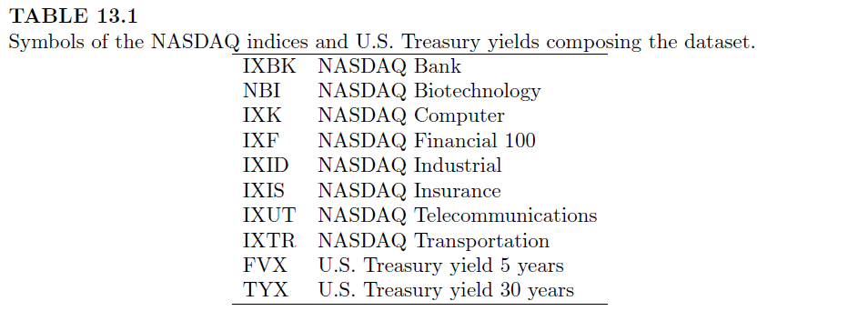

Otimização de portfólios com Restrições
- Retorno Alvo
- Investimento Total
- Posições Long-only
- Restrições de grupo
Modelo de Média-Variância
- Exemplos
Modelo de Média-Variância Robusto
Modelo de Mínima Variância
02 de junho de 2023
Aula de Hoje
Otimização de portfólios
Otimização de portfólios consiste em minimizar uma medida de risco dado um retorno alvo e restrições operacionais.
Vamos ver primeiro como implementar alguns tipos comuns de restrições.
Em seguida, vamos ver o Modelo de Média-Variância, em que a medida de risco é dada pela matriz de covariância do portfólio, e algumas variações deste modelo ilustrados por exemplos.
Otimização de portfólios
Restrições
Além das medidas de risco, outro ponto importante da otimização de portfólios é a especificação das restrições operacionais ou preferenciais.
Antes de mostrar os exemplos, vamos ver alguns tipos de restrições que são comuns em alocação de portfólios, e como implementá-las como funções do R.
Restrições
Target Reward (retorno alvo)
Essa restrição vem do objetivo de atingir um retorno alvo com a alocação do portfólio.
A restrição é dada por:
\[\mu'\mathbf{w} = \bar{r} \]
onde \(\mu\) é o vetor de retornos médios dos componentes do portfólio, \(\mathbf{w}\) são os pesos que desejamos calcular, e \(\bar{r}\) é o retorno alvo.
Restrições
Target Reward (retorno alvo)
- Para implementar essa restrição no R, vamos considerar a matriz \(\mathbf{A}_{eq}\) e o vetor \(\mathbf{a}_{eq}\) (da aula passada).
\[ \mathbf{A}_{eq} \,\mathbf{x} = \mathbf{a}_{eq} \]
## Restrição Retorno Alvo
targetReturn <- function(x, target) {
list(Aeq = rbind(colMeans(x)), aeq = target)
}
Restrições
Full Investment (investimento total)
Essa restrição diz que o capital deve estar todo investido no portfólio.
Corresponde à condição na qual a soma dos pesos \(\mathbf{w}\) deve ser 100%, onde os pesos correspondem à proporção do capital a ser alocado para cada componente.
\[ \mathbf{A}_{eq} \,\mathbf{x} = \mathbf{a}_{eq} \]
## Restrição Investimento Total
fullInvest <- function(x) {
list(Aeq = matrix(1, nrow = 1, ncol = ncol(x)), aeq = 1)
}
Restrições
Long Only (posições compradoras)
Essa restrição especifica que o fundo só pode operar com posições compradoras (long = operar “comprado”), isto é, vai receber mais com a valorização dos ativos.
Isso é diferente de operar “vendido” (short), por exemplo com empréstimo de ações, em que você ganha com a desvalorização dos ativos. Nesse caso, os pesos dos ativos seriam negativos.
Assim, de acordo com essa restrição, os pesos só podem ser positivos.
Restrições
Long Only (posições compradoras)
\[ \mathbf{A} \,\mathbf{x} \geq \mathbf{a} \]
## Restrição Long Only
longOnly <- function(x) {
list(A = diag(1, ncol(x)), a = rep(0, ncol(x)))
}
Restrições
Restrições de grupo
Essas restrições são derivadas de restrições operacionais que obrigam um investidor a ter uma porcentagem mínima/máximo dos ativos em um determinado grupo de ações.
Por exemplo:
no máximo 10% do portfólio pode estar no setor financeiro ou de bancos;
no máximo 30% do portfólio pode estar em um único ativo;
no mínimo 10% do portfólio deve estar investido no tesouro nacional.
Dados índices NASDAQ
- Para isso, vamos usar os seguintes índices (Capítulo 13):

- FVX = United States 5-Year Bond Yield;
- TYX = United States 30-Year Bond Yield
Dados índices NASDAQ
- Foram extraídos o valor de cada índice entre 01/03/2020 e 01/03/2021 (site: https://www.investing.com)
## Dados NASDAQ
file = "../datasets/nasdaq.csv"
nas = read.csv(file, colClasses = c("Date", rep("numeric",10)))
head(nas)
id = names(nas)[-1]
## calcular retornos
x <- apply(nas[,-1], MAR=2, function(x) x[-1] / x[-length(x)] - 1)
dim(x)
## Restrição de Grupo
GroupBudget <- function() {
# max 10\% in financial and bank sector
A1 <- matrix(0, ncol = length(id), nrow = 1)
colnames(A1) <- id
A1[1, c("IXBK", "IXF")] <- -1
a1 <- -0.1
# max 30\% in a single instrument
A2 <- diag(-1, length(id))
a2 <- rep(-0.3, length(id))
# at least 10\% in treasury
A3 <- matrix(0, ncol = length(id), nrow = 1)
colnames(A3) <- id
A3[1, c("FVX", "TYX")] <- 1
a3 <- 0.1
list(A = rbind(A1, A2, A3), a = c(a1, a2, a3))
}
Modelo de Média-Variância
O Modelo de Média-Variância é um modelo de otimização (Markowitx, 1953) que assume que:
- o portfólio consiste em ativos de risco e ativos sem risco;
- os preços dos ativos são dados e determinados externamente;
- os investidores não influenciam no preço dos ativos;
- os retornos seguem processos estocásticos com distribuições de probabilidade elípticas (parecida com a normal multivariada), o que quer dizer que existe uma matriz de covariância;
- não considera taxas e custos de transações;
- os mercados para todos os ativos são líquidos (é possível convertê-los em dinheiro facilmente);
- os ativos são infinitamente divisíveis;
- e é preciso fazer investimento total.
Modelo de Média-Variância
- A medida de risco proposta por Markowitz é uma matriz de covariância dos ativos ponderada:
\[\mathbf{w}'\, \Sigma \, \mathbf{w} = \sum_i \sum_j w_i \,. w_j \,. \mbox{Cov}(\mathbf{x}_i,\mathbf{x}_j) \] onde \(\Sigma\) é a matriz de covariância e \(\mathbf{w}\) são os pesos do portfólio.
Modelo de Média-Variância
- A otimização é obtida definindo-se um retorno alvo \(\bar{r}\), e as restrições de investimento total e long-only, tal que:
\[\mbox{minimize}_{\mathbf{w}} \qquad \mathbf{w}'\,\Sigma \,\mathbf{w} \qquad \mbox{(risco covariância)} \\[.5cm] \mbox{sujeito a } \qquad \mathbf{w}' \hat{\mu} = \bar{x} \qquad \mbox{(retorno alvo)} \\ \qquad \qquad \qquad \qquad \ \mathbf{w}' \mathbf{1} = 1 \qquad \mbox{(investimento total)} \\ \qquad \qquad \quad \, \mathbf{w} \geq 0 \qquad (long \;only) \]
onde \(\hat{\mu}\) é o vetor dos retornos médios.
Modelo de Média-Variância
Esse problema não pode ser resolvido analiticamente, por isso precisamos de um algoritmo de otimização.
O Modelo de Média-Variância é representado por um problema de Otimização Quadrática.
Vamos usar a função
QP_solverdefinida na última aula.
## Modelo de Média-Variância
MV_QP <- function(x, target, Sigma = cov(x), ...,
cstr = c(fullInvest(x), targetReturn(x, target), longOnly(x), ...),
trace = FALSE) {
# quadratic coefficients
size <- ncol(x)
c <- rep(0, size)
Q <- Sigma
# optimization
sol <- QP_solver(c, Q, cstr, trace)
# extract weights
weights <- sol$solution
names(weights) <- colnames(x)
weights
}
Modelo de Média-Variância
Na função
MV_QP,xsão os retornos dos ativos,targeté o retorno alvo do portfólio, eSigmaé o estimador clássico de covariância.Os demais argumentos são apenas usados para passar as restrições para o problema de otimização.
Modelo de Média-Variância
Exemplo
Esse modelo pode ser implementado de algumas maneiras diferentes.
Vamos testar primeiro o modelo para encontrar os pesos que minimizam a medida de risco usando a média dos retornos de um portfólio uniforme (pesos iguais) como retorno alvo.
## Exemplo - retorno alvo = média dos retornos w <- MV_QP(x, target=mean(x)) round(w,4) # pesos 'ótimos'
## IXBK NBI IXK IXF IXID IXIS IXUT IXTR FVX TYX ## 0.0000 0.2867 0.0000 0.0000 0.0000 0.2509 0.3710 0.0000 0.0914 0.0000
Modelo de Média-Variância
Exemplo
## restrições atendidas? all.equal( c( t(w)%*%col_means(x) ) , mean(x) ) # retorno alvo all.equal( sum(w) , 1 ) # investimento total # sum(w) == 1 all(round(w,10) >= 0) # long only
Modelo de Média-Variância
Exemplo
- Pesos que minimizam o risco e atingem o retorno médio:
Modelo de Média-Variância
Exemplo
## modelo de média-variância t(w)%*%cov(x)%*%w # covariância t(w)%*%col_means(x) # retorno ## modelo de pesos uniformes u = rep(1/10,10) t(u)%*%cov(x)%*%u # covariância t(u)%*%col_means(x) # retorno
Modelo de Média-Variância
Exemplo
Vamos fazer outro teste para o nosso modelo.
Vamos ver o que acontece quando definimos o retorno alvo como o menor retorno médio dentre os ativos.
## Exemplo - retorno alvo = retorno médio mínimo which(col_means(x)==min(col_means(x)))
## IXID ## 5
Modelo de Média-Variância
Exemplo
w <- MV_QP(x, target=min(col_means(x))) round(w, 4)

Modelo de Média-Variância
Exemplo
## restrições atendidas? all.equal( c(t(w)%*%col_means(x)) , min(col_means(x)) ) # retorno alvo all.equal(sum(w) , 1) # investimento total all(round(w,10) >= 0) # long only # all(w >= 0)
Modelo de Média-Variância
- Até agora, para rodar a função de otimização de acordo com o Modelo de Média-Variância, só especificamos a matriz de retornos
xe o valor do retorno alvotarget.
args(MV_QP)
## function (x, target, Sigma = cov(x), ..., cstr = c(fullInvest(x), ## targetReturn(x, target), longOnly(x), ...), trace = FALSE) ## NULL
- O argumento
cstrpassa as restrições default de investimento total, retorno alvo e long-only. Vamos ver agora como especificar mais condições, como as restrições de grupo.
Modelo de Média-Variância
Exemplo
## Exemplo - restrições de grupo w <- MV_QP(x, mean(x), Sigma = covMcd(x)$cov, GroupBudget())
Modelo de Média-Variância Robusto
Modelo de Média-Variância Robusto
Uma desvantagem do Modelo de Média-Variância é o uso da matriz de covariância para estimar o risco.
O problema é que a matriz de covariância amostral é sensível à presença de outliers, que aparecem frequentemente em dados financeiros.
Como passamos a matriz de covariância
Sigma=cov(x)como argumento para a funçãoMV_QP(), uma modificação simples do Modelo de Média-Variância é utilizar um estimador de covariância mais robusto.Vamos usar a função
covMcd(), do pacoterobustbase, que implementa o método do determinante de covariância mínima (Minimum Covariance Determinant) proposto por Rousseeuw & Driessen (1999). Esse método fornece um estimador mais robusto (menos sensível a outliers) para a covariância.
Modelo de Média-Variância Robusto
- Comparação dos pesos do método clássico e do método robusto:
Modelo de Mínima Variância
Modelo de Mínima Variância
Outro ponto criticado do Modelo de Média-Variância é o uso do retorno médio dos componentes do portfólio como retorno alvo.
Já foi mostrado que um erro no estimador da média pode suprimir os benefícios da otimização dos pesos, ou seja, um efeito de outliers no retorno médio pode levar a pesos inapropriados.
Assim, podemos considerar um Modelo de Mínima Variância que otimiza os pesos apenas levando em conta a minimização da covariância sem fixar o retorno alvo.
Modelo de Mínima Variância
## Modelo de Mínima Variância w <- MV_QP(x, cstr = c(fullInvest(x), longOnly(x)))
Outros Modelos de Alocação
Além da matriz de covariância, existem outras alternativas para a medida de risco. Uma medida popular é o VaR (Value-at-Risk).
O VaR é uma medida de risco probabilística. Por exemplo, um VaR ao nível de \(p\%\) é o valor tal que a probabilidade de uma perda maior do que ele seja menor ou igual a \(p\).
Mais detalhes e exemplos: Seção 13.5.5
Outros Modelos de Alocação
Os modelos que consideramos aqui têm apenas restrições lineares. No entanto, em alguns cenários, a alocação de pesos de um portfólio pode requerer otimização sob restrições não-lineares.
Por exemplo, um investidor pode estar interessado em minimizar a redução do valor do seu portfólio. A definição de redução do valor do portfólio, e um exemplo podem ser vistos na Seção 13.5.6.
Comparação de portfólios
Por fim, podemos estar interessados em comparar a performance de portfólios com alocações diferentes. Essas comparações podem ser feitas através das medidas de retorno e medidas de risco.
Alguns exemplos de como fazer essas comparações estão na Seção 13.6.